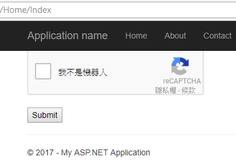
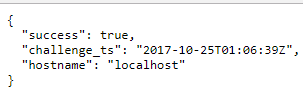
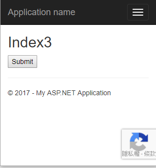

google reCAPTCHA (Completely Automated Public Turing test to tell Computers and Humans Apart)
就是提供「驗證碼」功能，用來檢驗位於 client 端的你是不是使用程式機器人在操作。
使用reCAPTCHA時需要一個對外的site key與一個驗證用的secret key，請自行至https://www.google.com/recaptcha/admin申請。
一些參數設定值請自行前往 https://developers.google.com/recaptcha/ 查閱。
reCAPTCHA在設定方面包含了client端與server端，而client端還分出三種型態的使用，
分別為reCAPTCHA V2、invisible reCAPTCHA、reCAPTCHA Android Library，使用方式如下。
一、reCAPTCHA V2
reCAPTCHA V1於2016五月不再被支援，改以reCAPTCHA V2取代，
reCAPTCHA V2有兩種展示方法(配合 <input type="submit" value="Submit"> )，
看是利用g-recaptcha tag attribute或是grecaptcha.render parameter方式，
端看個人適合用那一種，範例如下。
1、Automatically render (g-recaptcha tag attribute)
client端
@section header{
<script src="https://www.google.com/recaptcha/api.js" async defer></script>
}
<form action=@Url.Action("Index") method="POST">
<div class="g-recaptcha" data-sitekey="your_site_key"></div>
<br />
<input type="submit" value="Submit">
</form>
server端
[HttpPost]
public ActionResult Index(string response)
{
string secret = "your_secret_key";
string g_recaptcha_response = Request.Form["g-recaptcha-response"];
WebRequest WebRequest = WebRequest.Create("https://www.google.com/recaptcha/api/siteverify?secret=" + secret + "&response=" + g_recaptcha_response);
WebResponse WebResponse = WebRequest.GetResponse();
StreamReader sr = new StreamReader(WebResponse.GetResponseStream());
String apiResponse = sr.ReadToEnd();
sr.Close();
return Content(apiResponse, "application/json");
}
執行畫面如下



2、Explicitly render (grecaptcha.render parameter)
@{
ViewBag.Title = "Index2";
}
@section header{
<script type="text/javascript">
var onloadCallback = function () {
grecaptcha.render('html_element', {
'sitekey': 'your_site_key'
});
};
</script>
}
<form action=@Url.Action("Index2") method="POST">
<div id="html_element"></div>
<br>
<input type="submit" value="Submit">
</form>
<script src="https://www.google.com/recaptcha/api.js?onload=onloadCallback&render=explicit"
async defer>
</script>
server端與執行畫面同上。
二、invisible reCAPTCHA
invisible reCAPTCHA其實也是另一種展示方法。
注意，其invisible reCAPTCHA的site key與secret key不能與reCAPTCHA V2的key pair共用，需另外取得。
g-recaptcha-response的產生與傳送到後端兩動作被分段了，必須指定data-callback屬性來做「傳送到後端」動作。
1、使用button tag不需額外指定 data-size="invisible"
@{
ViewBag.Title = "Index3";
}
@section header{
<script src="https://www.google.com/recaptcha/api.js" async defer></script>
<script>
function onSubmit(token) {
document.getElementById("demo-form").submit();
}
</script>
}
<h2>Index3</h2>
<form id='demo-form' action=@Url.Action("Index3") method="POST">
<button class="g-recaptcha"
data-sitekey="your_site_key"
data-callback='onSubmit'>
Submit
</button>
<br />
</form>
server端同上例，只有畫面不太一樣

2、使用div tag額外指定 data-size="invisible"
@{
ViewBag.Title = "Index4";
}
@section header{
<script>
function onSubmit(token) {
alert('thanks ' + document.getElementById('field').value);
document.getElementById("demo-form").submit();
}
function validate(event) {
event.preventDefault();
if (!document.getElementById('field').value) {
alert("You must add text to the required field");
} else {
grecaptcha.execute();
}
}
function onload() {
var element = document.getElementById('mySubmit');
element.onclick = validate;
}
</script>
<script src="https://www.google.com/recaptcha/api.js" async defer></script>
}
<h2>Index4</h2>
<form id="demo-form" action=@Url.Action("Index4") method="POST">
Name: (required) <input id="field" name="field">
<div id='recaptcha' class="g-recaptcha"
data-sitekey="your_site_key"
data-callback="onSubmit"
data-size="invisible"></div>
<button id='mySubmit'>submit</button>
</form>
<script>onload();</script>
server端
[HttpPost]
public ActionResult Index4(string field)
{
string secret = "your_secret_key";
string g_recaptcha_response = Request.Form["g-recaptcha-response"];
WebRequest WebRequest = WebRequest.Create("https://www.google.com/recaptcha/api/siteverify?secret=" + secret + "&response=" + g_recaptcha_response);
WebResponse WebResponse = WebRequest.GetResponse();
StreamReader sr = new StreamReader(WebResponse.GetResponseStream());
String apiResponse = sr.ReadToEnd();
sr.Close();
return Content(apiResponse, "application/json");
}
執行畫面同上。
說明：
指定 data-callback="onSubmit" 的意思是，當完成reCAPTCHA驗證的時候，
就會呼叫data-callback所指定的onSubmit function，連同g-recaptcha-response一起送到後端去。
三、reCAPTCHA Android Library
這是提供給Android使用的，相關請參考SafetyNet reCAPTCHA API。
參考資料：